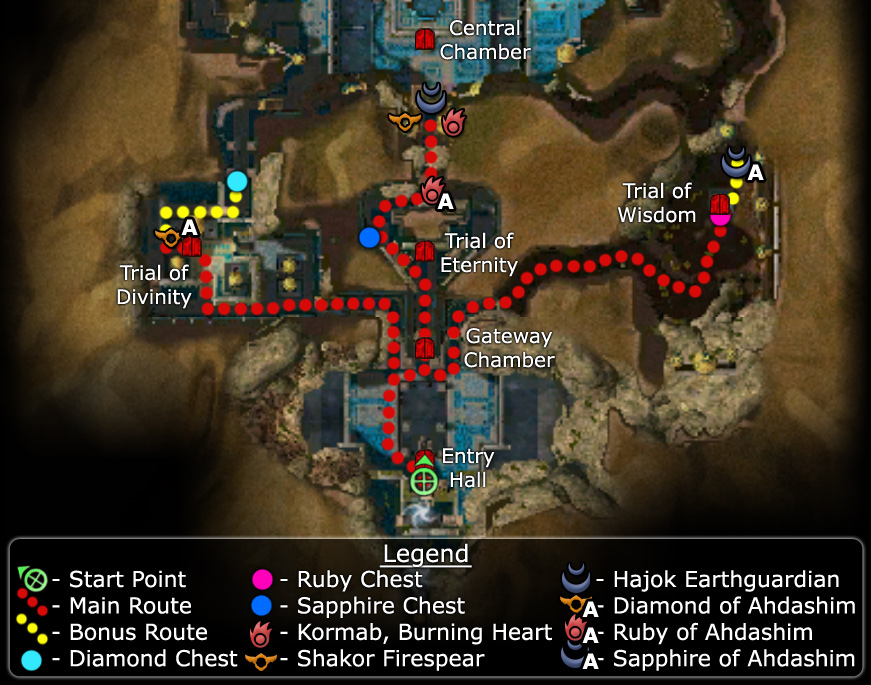

Elite: Searing Flames

Click to enlarge · Local cache · Wiki
The merchant princes have taken refuge within the Hidden City with heavy defenses such as Djinn guardians, traps and locked gates. In order to reach the princes, the party must travel with Goren and Margrid the Sly and complete three trials to unlock the door to the inner sanctum.
Region: Vabbi · Mission: 10a of 20 · Type: Cooperative
Required hero: Margrid the Sly
Path: Margrid path
Gain access to the vault's inner sanctum and rescue the two princes.
Talk to the Lock of Ahdashim in the Dasha Vestibule outpost to start the mission. Goren will be in the starting area; speak to him and he will join the party. He will need to survive the mission. The entrance to the three chambers has a number of groups of Djinn. Tackle them one group at a time. When fighting groups of Djinn, the Ruby Djinns using Searing Flames should be a priority target as they can deal massive amounts of damage to the party. Proceed towards the far wall where you will find three paths. The central path leads to the Trial of Eternity, the left the Trial of Divinity, and the right leads to the Trial of Wisdom. The only path open at this time is the Trial of Eternity.
There are six Eternal Guardians which produce global environmental effects for this trial. Defeating a guardian will remove its effect. Complete the trial by defeating all six guardians.
The guardians may produce one of three environmental effects. The guardians at the base of the stairs produce lesser effects than those further back. These effects are as follows:
| Name | Lesser effect | Greater effect |
| Eternal Suffering | -1 health degeneration | -2 health degeneration |
| Eternal Lethargy | Move 10% slower | Move 20% slower |
| Eternal Languor | Skills recharge 10% slower | Skills recharge 20% slower |
Note that when you reach the stairs, the left path is slightly more difficult, as the guardians of the sapphire chest will spawn once the party gets close to the chest and augment the group of Djinn and guardians already there. Either pull the Djinns away from the chest or take the path to the right. This requires defeating the Ruby of Ahdashim which is needed for the bonus.
Upon completing the trial, the door to the Trial of Divinity will open.
There are two traps placed just after the left turn in the entrance corridor to this trial (one fire, and one water). It is imperative that you pull the Djinn away from the traps to battle them, in order to avoid accidentally being caught in the traps.
Towards the back of the room stands a row of Divine Guardians. They will ask questions regarding the Gods of Tyria, and you must choose the answer that fits the clue the best. The clues change during each run of the mission, but the answers are always the same. From left to right, the correct answers are as follows:
If you give the wrong answer, a group of foes will spawn around you, but the Divine Guardian will still count as completed.
After answering all six questions (one way or the other), the door to the Trial of Wisdom will open.
Like the Trial of Divinity, the first turn is greeted with a pair of Djinn and a pair of water traps. Pull the Djinn away from the traps to battle before proceeding.
The main chamber includes four Thunder of Ahdashim — these are essentially Diamond Djinn that use Quake Of Ahdashim, a skill that knocks down and damages characters in the area. Since it also destroys any crystal keys they may be carrying, you should kill them before attempting the puzzle.
The puzzle itself involves two Crystal Keys, four obelisks numbered 2, 3, 5, and 7 (the first four prime numbers), and six pedestals numbered 6, 10, 14, 15, 21, and 35. Your objective is to activate (using the keys) two of these pedestals whose numbers are divisible by the numbers on the obelisks. As you place a key, the matching obelisks will display keys (meaning they are activated). Make sure you do not overlap. Proper combinations are suggested below.
Incorrectly matching pedestals resets the puzzles and spawns new Ahdashim. After completing this puzzle, the final set of doors (leading to the end-bosses) will open.
There are three combinations that work, each matching pedestal pairs the same distance from the center:
If doing the bonus, don't forget to pick up the Sapphire Treasure as you make your way to the final room.
The final stage of the mission contains three Djinn bosses. Luckily, each boss may be pulled and fought separately from the others. The mission ends after defeating the last one.
The bonus requires you to pick up three treasures from various chests: each chest is located in one of the trial areas and the key is held by a Djinn of Ahdashim with a similar name. Very little extra effort is required for the bonus: if you follow the standard mission order (Eternity→Divinity→Wisdom), you will pick up each key before you come across the corresponding chest.
There are only two complications: as you approach each chest, a group of three Djinn will pop up (including a Ruby Djinn), but these are no harder than any of the other groups you encounter. There is a fire trap in the left trial room behind the Diamond chest, so be careful. You must also pick up the third treasure before you kill the third Djinn boss in the final room.
The chests and keys appear as follows:
| Trial | Chest | Nearby key |
|---|---|---|
| Eternity | Sapphire | Ruby Key |
| Divinity | Diamond | Diamond Key |
| Wisdom | Ruby | Sapphire Key |
The key to victory will depend on how you make good use of Margrid. Rangers have 30 extra armor against elemental damage and are the best suited for these occasions. Since she is a required hero, use one of the first three individual hero flags to position her in the party composition. The hardest enemies in this mission are the Ruby Djinns and the Elementalist boss which spam Searing Flames, to reduce their damage output, disable their elite with skills like Distracting Shot, Magebane Shot and Diversion. Due to the Roaring Ethers energy removal, your hero will need a generous energy base pool in order to use skills, e.g.:30~40 and a good spec in Expertise. Once the Elementalist foe has been killed, only the Dervish Djinns will remain. Flagging this hero ahead of the main team is essential to survival, she can be placed just over the aggro bubble or a bit ahead, so that all foes target lock on her rather the entire team. At the central room, eliminate the enemies that cause environmental effects to remove pressure and make sure to use this hero to trigger the chest pop-ups. While performing this technique, it is vital to pay close attention to the radar and watch enemy positioning, make sure your projectile attacks and skills will not be obstructed by the walls of each narrow corridor.